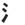

|  | waterleft |
| SUI |
After 4 days in the desert, the water tasted SWEET. |
|
The vertical stroke is like a waterfall, with four drops of water splashing out from it. |
| みず |
water
★★★★★ |
| 水曜日 |
Wednesday
★★★★★
KUN ON
|
| 水着 |
swim-suit
★★★☆☆
KUNKUN
|
| 香水 | |
| 水族館 |
aquarium
★★☆☆☆
|
| 水商売 |
hostess clubs, host clubs,strip clubs, etc.
★★☆☆☆
KUN ON
|
| 洪水 |
flood
★☆☆☆☆
flood (be careful - the す is pronounced ず、which is really unusual.) |
| 水滴 |
drop of water
☆☆☆☆☆
a drop of water |
| 排水溝 |
big ditch.
☆☆☆☆☆
big ditch. who cares. |
| Meaning | Hint | Radical | |
|---|---|---|---|
| 氷 | ice | ONE SNOWFLAKE-DOT | |
| 水 | water | NO FLAKES AT ALL | |
| 永 | forever | TWO SNOWFLAKE-DOTS |
Ice has the SNOWFLAKE on top, water doesn't. So you can say, "Water doesn't have a SNOWFLAKE because water is warm."
If it has been icy for ever, there are TWO SNOWFLAKES piled up on top of each other!
 KANJIDAMAGE
KANJIDAMAGE